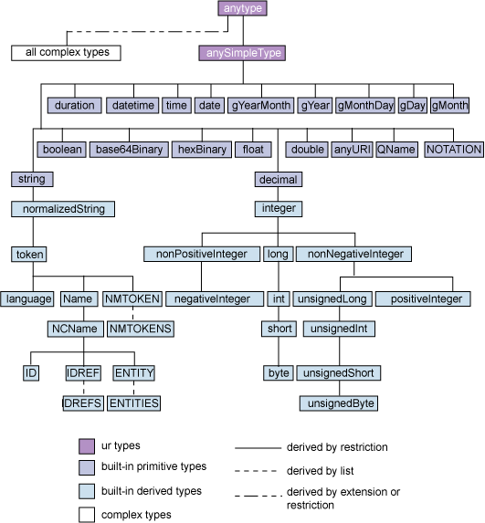

RDF terms in rdflib¶
Terms are the kinds of objects that can appear in a quoted/asserted triples. Those that are part of core RDF concepts are: Blank Node, URI Reference and Literal, the latter consisting of a literal value and either a datatype or an RFC 3066 language tag.
All terms in RDFLib are sub-classes of the rdflib.term.Identifier class. A class diagram of the various terms can be seen in the term_class_hierarchy diagram.
@startuml skinparam shadowing false skinparam monochrome true skinparam packageStyle rectangle skinparam backgroundColor FFFFFE
class Node
- class Identifier {
eq(other) -> bool neq(other) -> bool startswith(prefix: str, start, end) -> bool
} Identifier -up-|> Node
- class IdentifiedNode {
toPython() -> str
} IdentifiedNode -up-|> Identifier
- class URIRef {
n3(namespace_manager) -> str defrag() -> URIRef de_skolemize() -> BNode
} URIRef -up-|> IdentifiedNode
class Genid Genid -up-|> URIRef
class RDFLibGenid RDFLibGenid -up-|> Genid
- class BNode {
n3(namespace_manager) -> str skolemize(authority, basepath) -> RDFLibGenid
} BNode -up-|> IdentifiedNode
- class Literal {
datatype: Optional[str] lang: Optional[str] value: Any
normalize() -> Literal n3(namespace_manager) -> str toPython() -> str
} Literal -up-|> Identifier
- class Variable {
n3(namespace_manager) -> str toPython() -> str
} Variable -up-|> Identifier
@enduml
Nodes are a subset of the Terms that the underlying store actually persists. The set of such Terms depends on whether or not the store is formula-aware. Stores that aren’t formula-aware only persist those terms core to the RDF Model but those that are formula-aware also persist the N3 extensions. However, utility terms that only serve the purpose of matching nodes by term-patterns will probably only be terms and not nodes.
URIRefs¶
A URI reference within an RDF graph is a Unicode string that does not contain any control characters ( #x00 - #x1F, #x7F-#x9F) and would produce a valid URI character sequence representing an absolute URI with optional fragment identifier – W3 RDF Concepts
- class rdflib.term.URIRef(value: str, base: Optional[str] = None)[source]
RDF URI Reference: http://www.w3.org/TR/rdf-concepts/#section-Graph-URIref
>>> from rdflib import URIRef
>>> uri = URIRef()
Traceback (most recent call last):
File "<stdin>", line 1, in <module>
TypeError: __new__() missing 1 required positional argument: 'value'
>>> uri = URIRef('')
>>> uri
rdflib.term.URIRef('')
>>> uri = URIRef('http://example.com')
>>> uri
rdflib.term.URIRef('http://example.com')
>>> uri.n3()
'<http://example.com>'
Literals¶
Literals are attribute values in RDF, for instance, a person’s name, the date of birth, height, etc. Literals can have a datatype (i.e. this is a double) or a language tag (this label is in English).
- class rdflib.term.Literal(lexical_or_value: Any, lang: Optional[str] = None, datatype: Optional[str] = None, normalize: Optional[bool] = None)[source]
RDF Literal: http://www.w3.org/TR/rdf-concepts/#section-Graph-Literal
The lexical value of the literal is the unicode object. The interpreted, datatyped value is available from .value
Language tags must be valid according to :rfc:5646
For valid XSD datatypes, the lexical form is optionally normalized at construction time. Default behaviour is set by rdflib.NORMALIZE_LITERALS and can be overridden by the normalize parameter to __new__
Equality and hashing of Literals are done based on the lexical form, i.e.:
>>> from rdflib.namespace import XSD
>>> Literal('01') != Literal('1') # clear - strings differ True
but with data-type they get normalized:
>>> Literal('01', datatype=XSD.integer) != Literal('1', datatype=XSD.integer) False
unless disabled:
>>> Literal('01', datatype=XSD.integer, normalize=False) != Literal('1', datatype=XSD.integer) True
Value based comparison is possible:
>>> Literal('01', datatype=XSD.integer).eq(Literal('1', datatype=XSD.float)) True
The eq method also provides limited support for basic python types:
>>> Literal(1).eq(1) # fine - int compatible with xsd:integer True >>> Literal('a').eq('b') # fine - str compatible with plain-lit False >>> Literal('a', datatype=XSD.string).eq('a') # fine - str compatible with xsd:string True >>> Literal('a').eq(1) # not fine, int incompatible with plain-lit NotImplemented
Greater-than/less-than ordering comparisons are also done in value space, when compatible datatypes are used. Incompatible datatypes are ordered by DT, or by lang-tag. For other nodes the ordering is None < BNode < URIRef < Literal
Any comparison with non-rdflib Node are “NotImplemented” In PY3 this is an error.
>>> from rdflib import Literal, XSD >>> lit2006 = Literal('2006-01-01',datatype=XSD.date) >>> lit2006.toPython() datetime.date(2006, 1, 1) >>> lit2006 < Literal('2007-01-01',datatype=XSD.date) True >>> Literal(datetime.utcnow()).datatype rdflib.term.URIRef(u'http://www.w3.org/2001/XMLSchema#dateTime') >>> Literal(1) > Literal(2) # by value False >>> Literal(1) > Literal(2.0) # by value False >>> Literal('1') > Literal(1) # by DT True >>> Literal('1') < Literal('1') # by lexical form False >>> Literal('a', lang='en') > Literal('a', lang='fr') # by lang-tag False >>> Literal(1) > URIRef('foo') # by node-type True
The > < operators will eat this NotImplemented and throw a TypeError (py3k):
>>> Literal(1).__gt__(2.0) NotImplemented
A literal in an RDF graph contains one or two named components.
All literals have a lexical form being a Unicode string, which SHOULD be in Normal Form C.
Plain literals have a lexical form and optionally a language tag as defined by RFC 3066, normalized to lowercase. An exception will be raised if illegal language-tags are passed to
rdflib.term.Literal.__init__().Typed literals have a lexical form and a datatype URI being an RDF URI reference.
Note
When using the language tag, care must be taken not to confuse language with locale. The language tag relates only to human language text. Presentational issues should be addressed in end-user applications.
Note
The case normalization of language tags is part of the description of the abstract syntax, and consequently the abstract behaviour of RDF applications. It does not constrain an RDF implementation to actually normalize the case. Crucially, the result of comparing two language tags should not be sensitive to the case of the original input. – RDF Concepts and Abstract Syntax
BNodes¶
In RDF, a blank node (also called BNode) is a node in an RDF graph representing a resource for which a URI or literal is not given. The resource represented by a blank node is also called an anonymous resource. According to the RDF standard, a blank node can only be used as subject or object in a triple, although in some syntaxes like Notation 3 it is acceptable to use a blank node as a predicate. If a blank node has a node ID (not all blank nodes are labelled in all RDF serializations), it is limited in scope to a particular serialization of the RDF graph, i.e. the node p1 in the subsequent example does not represent the same node as a node named p1 in any other graph –wikipedia
- class rdflib.term.BNode(value: typing.Optional[str] = None, _sn_gen: typing.Callable[[], str] = <function _serial_number_generator.<locals>._generator>, _prefix: str = 'N')[source]
Blank Node: http://www.w3.org/TR/rdf-concepts/#section-blank-nodes
>>> from rdflib import BNode
>>> bn = BNode()
>>> bn
rdflib.term.BNode('AFwALAKU0')
>>> bn.n3()
'_:AFwALAKU0'
Python support¶
RDFLib Literals essentially behave like unicode characters with an XML Schema datatype or language attribute.
The class provides a mechanism to both convert Python literals (and their built-ins such as time/date/datetime) into equivalent RDF Literals and (conversely) convert Literals to their Python equivalent. This mapping to and from Python literals is done as follows:
XML Datatype |
Python type |
|---|---|
None |
None 1 |
xsd:time |
time 2 |
xsd:date |
date |
xsd:dateTime |
datetime |
xsd:string |
None |
xsd:normalizedString |
None |
xsd:token |
None |
xsd:language |
None |
xsd:boolean |
boolean |
xsd:decimal |
Decimal |
xsd:integer |
long |
xsd:nonPositiveInteger |
int |
xsd:long |
long |
xsd:nonNegativeInteger |
int |
xsd:negativeInteger |
int |
xsd:int |
long |
xsd:unsignedLong |
long |
xsd:positiveInteger |
int |
xsd:short |
int |
xsd:unsignedInt |
long |
xsd:byte |
int |
xsd:unsignedShort |
int |
xsd:unsignedByte |
int |
xsd:float |
float |
xsd:double |
float |
xsd:base64Binary |
|
xsd:anyURI |
None |
rdf:XMLLiteral |
|
rdf:HTML |
|
- 1
plain literals map directly to value space
- 2
Date, time and datetime literals are mapped to Python instances using the isodate package).
- 3
this is a bit dirty - by accident the
html5libparser producesDocumentFragments, and the xml parserDocuments, letting us use this to decide what datatype when round-tripping.
An appropriate data-type and lexical representation can be found using:
- rdflib.term._castPythonToLiteral(obj, datatype)[source]¶
Casts a tuple of a python type and a special datatype URI to a tuple of the lexical value and a datatype URI (or None)
and the other direction with
- rdflib.term._castLexicalToPython(lexical, datatype)[source]¶
Map a lexical form to the value-space for the given datatype :rtype:
Any:returns: a python object for the value orNone
All this happens automatically when creating Literal objects by passing Python objects to the constructor, and you never have to do this manually.
You can add custom data-types with rdflib.term.bind(), see also examples.custom_datatype

{kind=link}